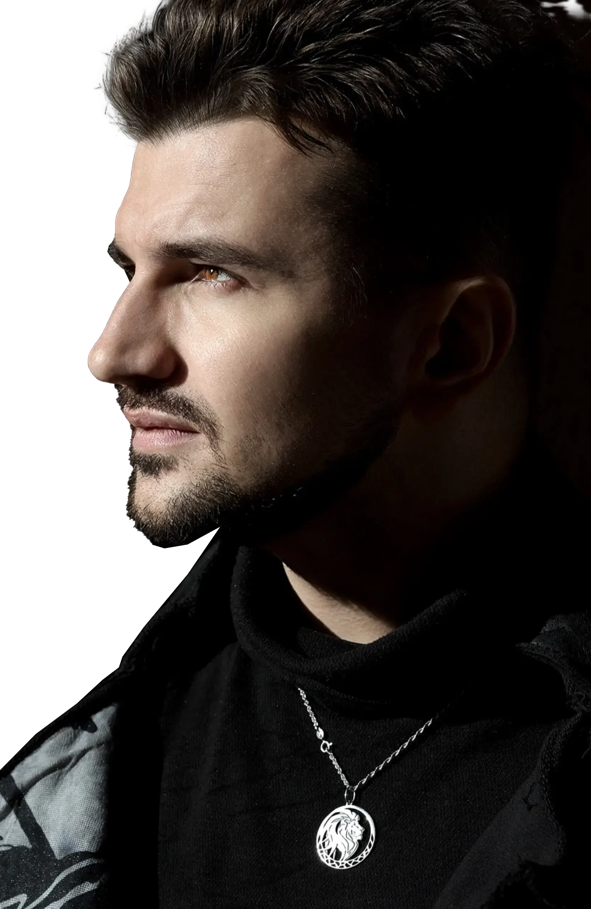
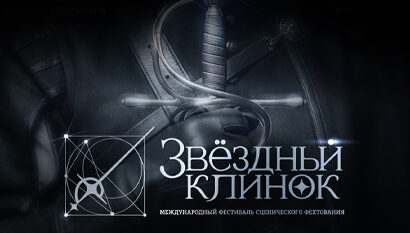
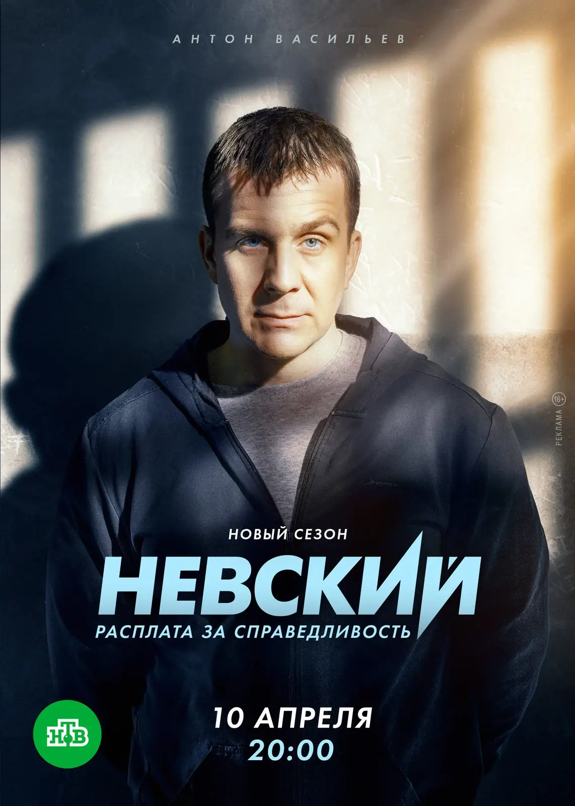
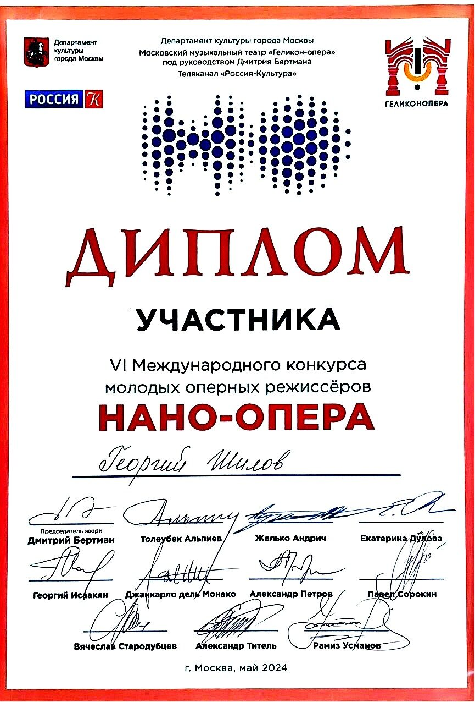
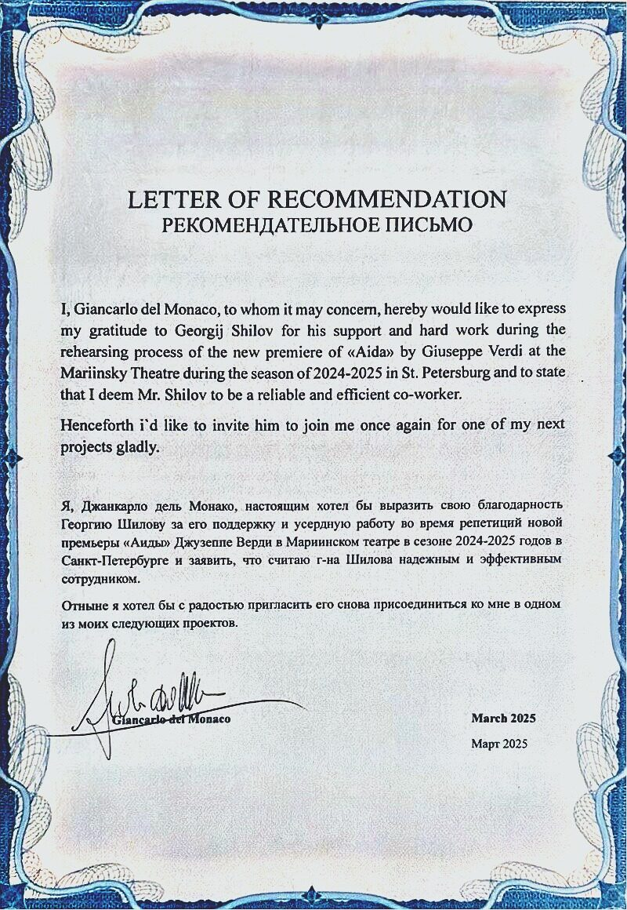

Готовится к постановке
 драма
драмаП. Санаев., инсценировка Г. Шилова
премьера — осень 2026
Похороните меня за плинтусом
Режиссёр-постановщик
Следите за новостями
ПодробнееОфициальный сайт
Актёр · Режиссёр · Педагог
Преподаватель актёрского мастерстваСанкт-Петербургская Государственная Консерваторияим. Римского-КорсаковаСанкт-Петербургский Государственный Университеткафедра театрального искусстваим. В.В. Лобанова
Ассистент маэстро Джанкарло дель Монако в России и СНГ
Победитель «Вампилов.FEST» (2025)
Дипломант «Нано-опера» (2024)
Образование
СПбГУ, факультет искусствкафедра театрального искусства, мастерская н. а. РФ — В. В. Лобанова.
ГИТИС — повышение квалификации:


Готовится к постановке
драмаП. Санаев., инсценировка Г. Шилова
премьера — осень 2026
Режиссёр-постановщик
Следите за новостями
Подробнее опера
операG.Verdi
2026
Режиссёр (Associate Director)
Большой театр Беларуси
Постановка Giancarlo del Monaco
 драма
драмаЕ. Коллегова
2026
Режиссёр-постановщик, Художник-постановщик
Иркутский академический драматический театр имени Н. П. Охлопкова
Подробнее театрализованный концерт
театрализованный концерт театрализованный концерт
театрализованный концерт опера
опера музыкальный спектакль
музыкальный спектакльпо мотивам повести Б.Васильева «А зори здесь тихие» и оперы К. Молчанова
2025
Режиссёр-постановщик
К 80-летию Победы
 музыкальный спектакль
музыкальный спектакльпо мотивам пьесы Г.Горина «Поминальная Молитва» и мюзикла Дж. Бока и Дж. Стайна «Скрипач на Крыше»
2025
Режиссёр-постановщик
Санкт-Петербургская Государственная Консерватория имени Н.А. Римского-Корсакова
Подробнее драма
драма2024
Режиссёр-постановщик
Союз театральных Деятелей РФ
 театрализованный концерт
театрализованный концерт2024
Режиссёр-постановщик
Санкт-Петербургская государственная консерватория имени Н. А. Римского-Корсакова
 опера
опера stand-up tragedy
stand-up tragedyМ. Праматарова
2024
Режиссёр-постановщик, Художник-постановщик
Союз театральных Деятелей РФ
 театрализованный концерт
театрализованный концерт2023
Режиссёр концерта
Большой зал Московской консерватории
 опера
операG.Verdi
2023
Режиссёр-постановщик, Художник-постановщик
Особняк Мясникова, Санкт-Петербург
Подробнее музыкально-травматический спектакль
музыкально-травматический спектакль2022
Автор идеи, режиссер-педагог
По мотивам дневников артистов блокадного Ленинграда
Подробнее Автор Сценария
Автор Сценария2021
Автор сценария
Короткометражный фильм.
— «Лучший короткометражный фильм» и «Лучший монтаж» в Венгрии (Pápa International Historical Film Festival)
— Победа в номинации «Золотое руно» в Москве
— Приз за «Лучшую операторскую работу» на фестивале «Сделано в Санкт-Петербурге»
 Автор либретто
Автор либретто2021
Автор либретто
Сеул, Южная Корея
 Автор либретто
Автор либретто2020
Автор либретто
Белорусский государственный академический музыкальный театр
 опера
опера2024
Ассистент режиссёра-постановщика
Мариинский театр
Режиссёр-постановщик — Джанкарло дель Монако

фестиваль2024
Ассистент режиссёра
Международный фестиваль сценического фехтования
 опера
опера2023
Ассистент режиссёра-постановщика
Первый Сочинский Фестиваль Классической Музыки
Режиссёр-постановщик И. Устьянцев
 опера
опера2023
Постановщик боевых сцен
Мариинский театр
 опера
опера2022–2023
Режиссёр-ассистент
Санкт-Петербургская Государственная Консерватория имени Н.А. Римского-Корсакова
Режиссёр-постановщик А. Степанюк
 опера
опера2022
Режиссёр-ассистент
Санкт-Петербургская Государственная Консерватория имени Н.А. Римского-Корсакова
Режиссёр-постановщик А. Степанюк
 опера
опера2021
Постановщик боевых сцен
Мариинский Театр
Режиссёр-постановщик
А. Франдетти
Кино, телевидение и экранные проекты — 21 работа в 21 проекте
По вопросам сотрудничества — агент Юлия Шелковникова, агентство «FOCUS» · +7 (911) 209-36-03

Гоша

Серёжа

Целев
Подробнее об артисте

Победитель режиссёрского конкурса
Подробнее
Дипломант VI международного конкурса молодых оперных режиссёров

От маэстро Джанкарло дель Монако